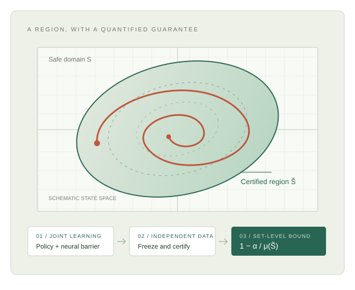
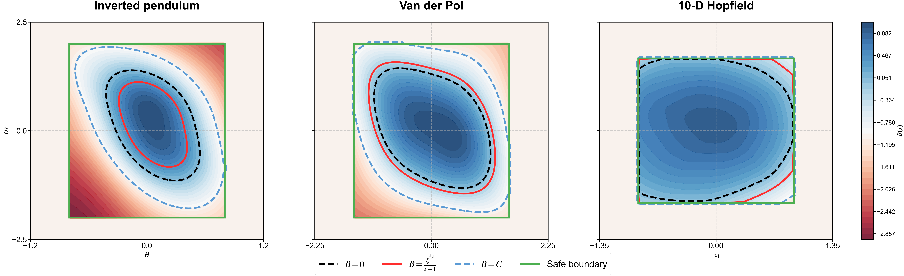

RESEARCH PROJECT · 2026
Learn a controller.
Certify a region.
What can finite data tell us about the safety of a learned controller? We combine neural barrier learning with independent statistical certification to quantify a region’s multi-step behavior.
Manuscript available · Implementation to follow

THE PAPER
Statistical Certification of Neural Barrier Functions for invariance and Reach-Avoidance in Learning-Enabled Systems
Zhipeng Cao, Nikolaus Vertovec, Luke Ong, Taoran Wu, Bai Xue
THE IDEA
Train jointly.
Certify independently.
Learning produces a candidate. A separate certification stage quantifies what that candidate supports under fixed dynamics and a fixed controller.
- 01 / LEARN
A policy and a barrier
Jointly train a controller and neural barrier from rollouts. PID feedback uses barrier violations to adapt the learning objective.
πθ↔BφPID-Barrier + PPO - 02 / CERTIFY
Freeze. Then collect new data.
Keep the learned pair fixed. Use independent initial states and finite-horizon rollouts to solve a scalar scenario optimization problem.
→ξ*Independent i.i.d. certification data - 03 / QUANTIFY
A family of certified regions
Admissible barrier thresholds yield nested regions and associated PAC bounds. Reuse the certificate while the dynamics and controller remain unchanged.
S̃ζ→1 − α / μSet-level, multi-step guarantees
INTERACTIVE EXPLAINER
What does the
certificate say?
The certified region has a size, and the certificate bounds the fraction of that region satisfying the specified finite-horizon property. Explore how those quantities relate.
Invariance: remain in the certified region over the next kmax steps.
Illustrative geometry and trajectories. Actual admissible regions are determined by the learned barrier and certified thresholds.
EXPLORE THE SET-LEVEL BOUND
1 − α / μS(S̃) = 1 − 0.05 / 0.50
N ≥ ⌈(2/α)(ln(1/β) + 1)⌉ for the scalar scenario problem. This guarantee quantifies a fraction of the certified set under the reference measure; it does not identify which individual states satisfy the property.
Confidence concerns the randomly sampled certification dataset. Region measure concerns initial states under a fixed reference measure. The property is evaluated over a finite horizon, with safety required before target arrival in reach-avoidance.
EXPERIMENTS
Learning behavior.
Certification evidence.
The paper evaluates an inverted pendulum, a Van der Pol oscillator, and a 10-dimensional Hopfield system, with invariance and reach-avoid tasks across five training seeds.



SELECTED PID-BARRIER RESULTS
The region and the bound belong together.
Reported results vary by task and system. In particular, the Hopfield invariance task yields a smaller region and a lower bound than its reach-avoid task.
| System / task | Valid seeds | Region μ | PAC bound |
|---|---|---|---|
| Pendulum · invariant | 5/5 | 0.461 | 0.965 |
| Pendulum · reach-avoid | 5/5 | 0.405 | 0.961 |
| Van der Pol · invariant | 5/5 | 0.624 | 0.974 |
| Van der Pol · reach-avoid | 5/5 | 0.586 | 0.973 |
| Hopfield · invariant | 2/5 | 0.031 | 0.483 |
| Hopfield · reach-avoid | 5/5 | 1.000 | 0.984 |
“Valid” follows the paper: seeds with PAC certificates for invariance; positive estimated set measure for reach-avoidance. Region measure is estimated; the reported bound uses 1 − α/μ. See the manuscript for the evaluation protocol and aggregation.
PAPER & PROJECT
Read the details.
Follow the implementation.
The repository currently contains the manuscript. Implementation code and reproduction instructions will be added in subsequent updates.
Manuscript version · October 20, 2026
Citation
@unpublished{cao2026statistical,
title = {Statistical Certification of Neural Barrier
Functions for invariance and Reach-Avoidance
in Learning-Enabled Systems},
author = {Cao, Zhipeng and Vertovec, Nikolaus
and Ong, Luke and Wu, Taoran and Xue, Bai},
year = {2026},
note = {Preprint},
url = {https://formalcert-ai.github.io/statistical-barrier-certification/}
}